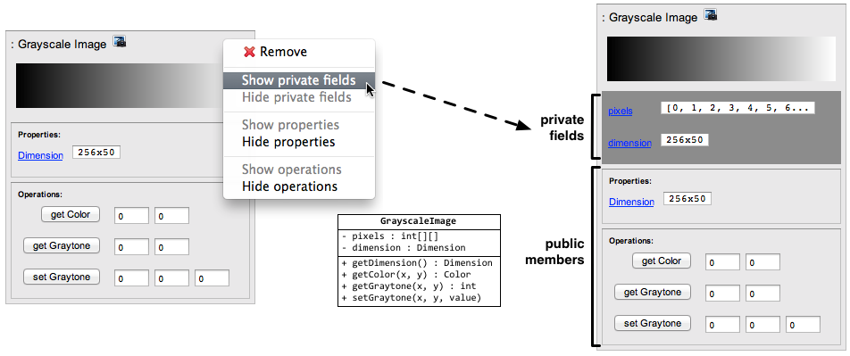
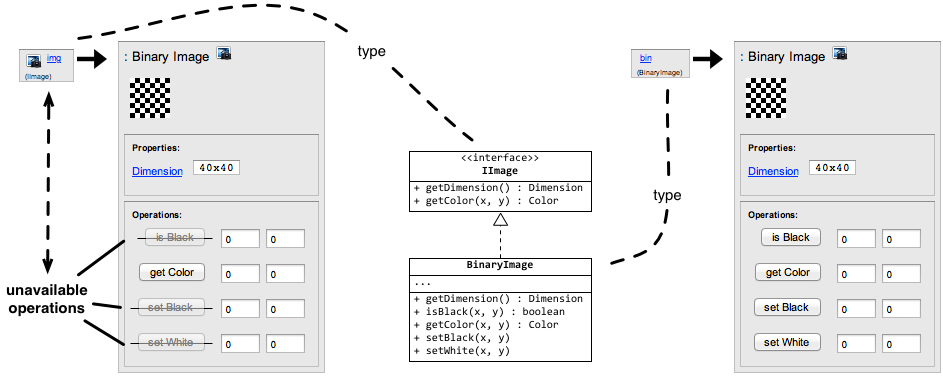
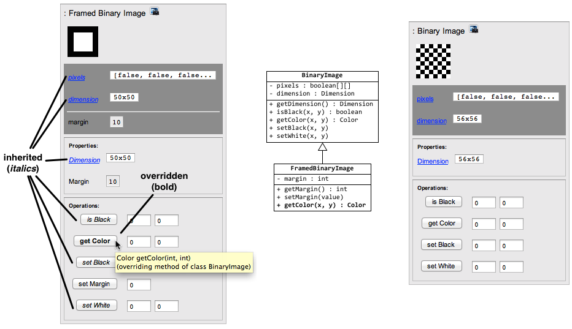
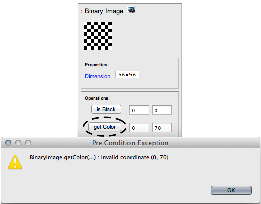

Welcome! AguiaJ is a free pedagogical environment based on Eclipse for experimenting
object-oriented programming in Java. AguiaJ started from an academic project in 2010 and is currently being used in
introductory programming courses at ISCTE-IUL.
Source code hosted at GitHub.
Features
Encapsulation:

Interfaces and polymorphism:

Inheritance:

Contracts:

Installation
- Download Eclipse Neon (of you do not have it already)
- Extract the contents of this zip to the dropins
folder of Eclipse
Getting started
Switch to AguiaJ perspective:

Switch back to Java perspective:

Publications
AguiaJ was presented at the following conferences on Computer Science Education:
- Novel Interaction Metaphors for Object-Oriented Programming Concepts
André L. Santos
Koli Calling: 14th International Conference on Computer Science Education, Koli, Finland, 2014.
- An open-ended environment for teaching Java in context
André L. Santos
ACM ITiCSE'12: 17th Annual Conference on Innovation and Technology in Computer Science Education, Haifa, Israel, 2012.
- AGUIA/J: A tool for interactive experimentation of objects
André L. Santos
ACM ITiCSE'11: 16th Annual Conference on Innovation and Technology in Computer Science Education, Darmstadt, Germany, 2011.